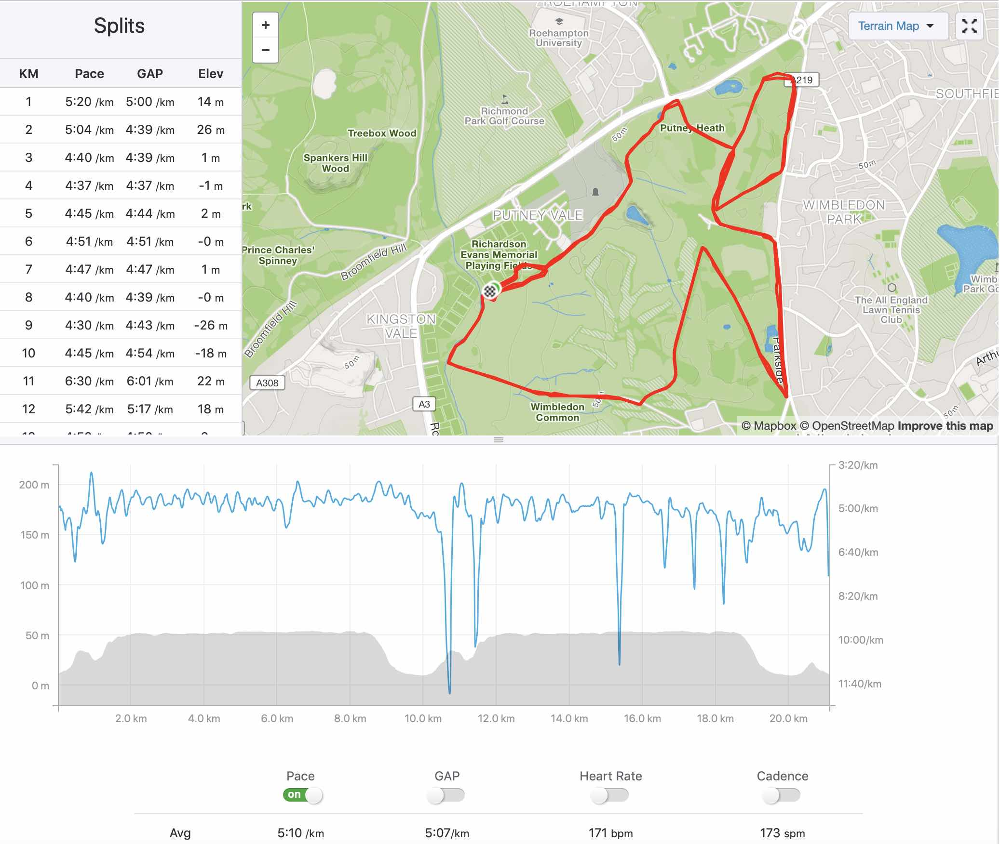
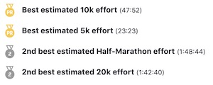

First Race Ever a.k.a. Ain't No Sunshine
From Nice to Wimbledon
Since we all signed up for the UTMC half-marathon, the Dream Team kind of reached an unsaid agreement:
The Nice half-marathon, in May the 5th, was a little bit too close from the UTMC, in July the 21st,
let’s just skip it.
But I did not want the crazy UTMC trail to be my first race either…
So, I found another half-marathon, in April the 7th, in Wimbledon Common.
That was just perfect! Perfect in theory… In practice, it was something else…
The Dream Team
In theory, all the members of the Dream Team would have joined…
But in practice, I was the only one…
And I am pretty sure it would have been much funnier!
The playlist
I have loaded my iPod with hundreds of my favorite songs!
And, since I am a rock’n’roll kind of guy, the songs will, in theory, help me to run fast enough!
The physical condition
In theory, you are at your pick physical level to race…
But in practice, I managed to catch a cold few days before the race…
But it was not that dramatic, I was just full of medicine!
The race time goal
In theory, you manage to race under your race time goal…
I had initially a pretty conservative race goal time of 1h50.
But Bergamot spent days to convince me that
I should run my first half marathon below 1h45.
Bergamot was actually stating the obvious:
- Since I was running at least a half-marathon every Sunday in less than 1h50, it would be easy. Well… make sense, right?
- Since I managed to run a half-marathon in 1h46 three weeks before this race, it would be easy peasy. Well… make sense, right?
- Since you race faster than you run, it would be easy peasy lemon squeezy. Well… make sense, right?
The race
Okay Bergamot! Let’s do it!
I started strong, a little bit too exited maybe… Following the crowd, I was able to get a 5km Personal Record (PR) and a 10km PR in the first half of the race. The main problem I then faced was to continue at that pace for the second half… By keeping this pace I would have finished around 1h40, pretty cool no?!
When a very specific song kicked in
But then… My iPod decided to play Ain’t no sunshine by Bill Withers. Don’t get me wrong, I love this song, it is a great song, a song full of emotions…
… maybe full of too many emotions!
I was thinking about Mademoiselle-Docteur-Chérie-mon-Amour-ma-Femme-de-ma-Vie-mon-Épouse
a.k.a. Rambo Chérie, not there with me… And I just started to cry, and stopped to run.
Looks like I am an emotional kind of guy after all.
Yeah, I stopped to run because of this song… And also maybe because I was not able to breath neither…
I little bit of both think actually.
And once you stop to run, you will continue to stop…
Race log

Race results

I finally crossed the finished line with a race time of 1h48.
But I learned few valuable lessons:
- do not have Ain’t no sunshine in your playlist.
-
do not start the race too strong:
- A 5k PR and a 10k PR in a 21km race does not seem right, and I am pretty sure that it is not!
- I heard that the first 2/3 of the race should be run with your legs and the last third with your heart. Well, it clearly does not work for the last 10k of a half marathon.
Conclusion
Yes, I was sick.
Yes, I cried.
Yes, I did not get a Personal Record on the half-marathon distance.
But it was so fun! And I am already thinking about the next race…
The next race
I realized few days later that the unsaid agreement evoked earlier was void:
- Rambo Chérie really wanted to race the Nice half-marathon.
- Barbie Girl already registered to the Nice half-marathon.
- Chamomile will join the race even if he is playing hard to get for now.
Okay guys! let’s just do it then!!!
Only Aurélia and Bergamot will not be able to join, but more on that later…